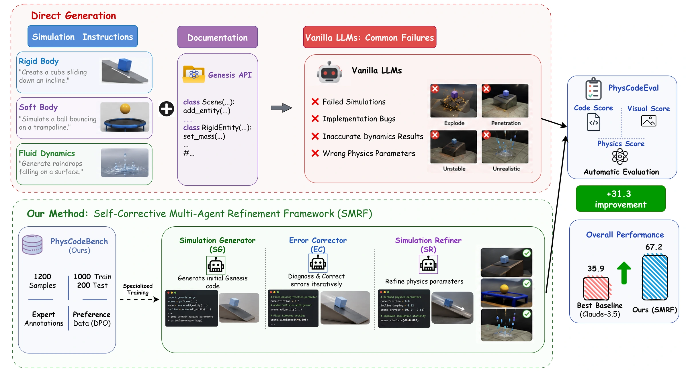
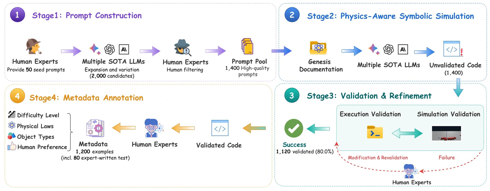
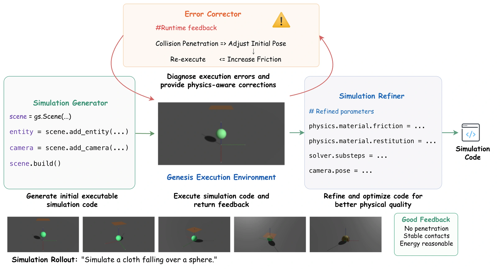
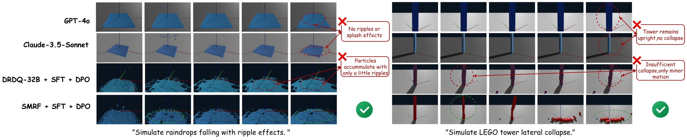

Rigid body
Contact, collisions, and motion.
410examples
Physics simulation Code generation 2026
Benchmarking Physics-Aware Symbolic Simulation of 3D Scenes
via Self-Corrective Multi-Agent Refinement
From language to simulations that obey physics.
✉ Corresponding authors: Tianyidan Xie and Zili Yi
Revised manuscript · Code and dataset release forthcoming

The research
Translating a natural-language description of a physical phenomenon into executable simulation code requires programming expertise and physical reasoning. We introduce PhysCodeBench, with 1,200 expert-validated examples across four physical domains. Its evaluation suite, PhysCodeEval, assesses code quality and visual fidelity, then measures physical correctness directly from engine state through conservation-law residuals and expert-written assertions. A MuJoCo-native test subset enables evaluation across engines.
Our reference method, the Self-Corrective Multi-Agent Refinement Framework (SMRF), separates generation, physics-aware error correction, and refinement into specialized agents. Targeted correction is the main driver of improved physical accuracy. The full framework reaches 67.2 / 100 on the total score and 70.6% on physical assertions, compared with 35.9 and 23.8% for the best proprietary baseline. Its advantage extends to hard scenarios and cross-engine transfer.
01 / In motion
Instructions become executable worlds.
Compare generated
rollouts side by side.
Original simulation outputs, presented at their original playback speed. Each clip retains its original duration. These visual examples complement the state-based evaluation below.
02 / The benchmark
PhysCodeBench asks a model to translate a natural-language scenario into a complete, executable physics simulation.
Each example pairs an instruction with an expert-validated Genesis implementation. Annotations cover difficulty, physical laws, object types, and preferences. Seed-level isolation keeps training and testing scenario families separate.
Contact, collisions, and motion.
Deformation, elasticity, and cloth.
Droplets, flow, and interactions.
Forces, constraints, and stability.
Two difficulty levels. 709 easy and 491 hard examples; hard scenarios combine interacting laws, multiple phases, or sensitive physical parameters.
Across engines. A 120-instruction test subset includes MuJoCo-native implementations and assertions to evaluate transfer beyond Genesis.

03 / PhysCodeEval
Execution, appearance, and physical correctness
answer
different questions.
Execution success and production of the expected simulation artifact, checked for existence, size, and format compliance.
ScodeInstruction–video alignment and motion quality, measuring semantic fidelity and identifying unstable or implausible motion.
SvisualExpert-written assertions read directly from engine state. Assertions of programs that fail to execute count as failed.
SphysTotal = Scode + SvisualA score out of 100. The physical-assertion pass rate is reported separately.
Conservation checksResiduals on executed trajectories provide a companion diagnostic for momentum, energy, and scenario-appropriate constraints.
436 expert-written assertions across the 200 test examples.
Check that displacement stays within 10° of the downhill direction, with no penetration below the incline plane.
Check that the first rebound height falls between 0.6 and 0.95 times the initial height.
Check for at least three concentric surface waves within 0.3 seconds of the first impact.
Assertions are authored from the instruction alone, independently of candidate implementations, and reviewed by a second expert. This provides a direct physical check alongside perceptual scores.
04 / The reference framework
SMRF · Self-Corrective Multi-Agent
Refinement Framework
Three specialized agents share the work of turning a scenario into a physically grounded simulation.
Generate initial Genesis code from the instruction and engine documentation.
Supervised fine-tuningUse runtime feedback to diagnose failed executions and attempt up to three rounds of correction.
Specialized error–fix trainingAfter successful execution, refine physical parameters and code quality using learned preferences.
SFT + preference optimization
05 / Evaluation
| Model | Code /50 | Visual /50 | Total /100 | Physics % |
|---|---|---|---|---|
| SMRF + SFT + DPOMulti-agent | 33.2 | 34.0 | 67.2 | 70.6 |
| SMRF + SFTMulti-agent | 30.5 | 31.1 | 61.6 | 63.5 |
| DRDQ-32B + SFT + DPOSingle-agent · fine-tuned | 18.4 | 19.1 | 37.5 | 32.1 |
| Claude-3.5-SonnetProprietary · zero-shot | 17.0 | 18.9 | 35.9 | 23.8 |
| DRDQ-32B + SFTSingle-agent · fine-tuned | 17.2 | 18.2 | 35.4 | 28.9 |
| GPT-4oProprietary · zero-shot | 15.7 | 18.1 | 33.8 | 21.6 |
| SMRF (base)Multi-agent | 16.2 | 17.5 | 33.7 | 30.4 |
| Gemini-2.0-ProProprietary · zero-shot | 14.8 | 16.8 | 31.6 | 19.7 |
| DeepSeek-R1Open-weight · zero-shot | 13.8 | 15.7 | 29.5 | 17.9 |
| DRDQ-32BOpen-weight · zero-shot | 12.0 | 15.6 | 27.6 | 16.2 |
| QwQ-32BOpen-weight · zero-shot | 6.7 | 8.8 | 15.5 | 7.4 |
| Qwen-2.5-32BOpen-weight · zero-shot | 0.8 | 1.1 | 1.9 | 0.9 |
| Expert reference (oracle)Oracle · reference implementations | 50.0 | 44.1 | 94.1 | 98.6 |
DRDQ-32B = DeepSeek-R1-Distill-Qwen-32B. All systems use the manuscript's shared inference budget. The expert reference row is an oracle, not a competing model. Full protocols, ablations, and limitations are in the updated paper.

06 / A closer look
The full framework leads the best proprietary baseline by 29.5–32.8 total-score points across domains. Fluids remain the most challenging setting, requiring coherent flow, interactions, and numerical stability.
| Model | Rigid | Soft | Fluid | Mechanics |
|---|---|---|---|---|
| Claude-3.5-Sonnet | 39.9 | 32.9 | 29.9 | 40.8 |
| DRDQ-32B + SFT + DPO | 41.4 | 34.5 | 31.5 | 42.4 |
| SMRF + SFT | 66.2 | 58.4 | 54.3 | 67.1 |
| SMRF + SFT + DPO | 72.3 | 63.2 | 59.4 | 73.6 |
Hard scenarios combine three or more physical laws, multiple phases, or sensitive parameter regimes. SMRF reaches 53.0 on hard tasks, compared with 24.5 for the strongest fine-tuned single agent, a 28.5-point advantage.
| Model | Easy | Hard |
|---|---|---|
| GPT-4o | 43.0 | 21.1 |
| Claude-3.5-Sonnet | 45.2 | 23.1 |
| Gemini-2.0-Pro | 40.7 | 19.0 |
| DRDQ-32B + SFT + DPO | 46.9 | 24.5 |
| SMRF (base) | 42.8 | 21.1 |
| SMRF + SFT | 72.1 | 47.1 |
| SMRF + SFT + DPO | 77.5 | 53.0 |
Removing the Error Corrector reduces the total by 11.3 points and the assertion pass rate by 17.8 percentage points. Removing refinement or preference alignment also reduces both metrics.
| Configuration | Total /100 | Physics % |
|---|---|---|
| Full SMRF + SFT + DPO | 67.2 | 70.6 |
| without EC | 55.9 | 52.8 |
| without SR | 58.4 | 59.8 |
| SR without DPO | 61.6 | 63.5 |
Testing transfer beyond one engine's API.
Genesis-trained SMRF transfers to MuJoCo without additional training and exceeds the evaluated zero-shot baselines. With 250 API-mapping examples, its score increases to 58.3.
This retains 87.9% of its Genesis score on the same 120 instructions (58.3 vs. 66.3). The adapted and zero-shot settings are shown separately.
| Approach | Adaptation examples | Total /100 |
|---|---|---|
| GPT-4o (zero-shot) | 0 | 26.8 |
| Gemini-2.0-Pro (zero-shot) | 0 | 24.9 |
| Claude-3.5-Sonnet (zero-shot) | 0 | 28.5 |
| DRDQ-32B + SFT + DPO (adapted) | 250 | 36.7 |
| SMRF (Genesis-trained, transfer) | 0 | 41.2 |
| SMRF + adaptation samples | 250 | 58.3 |
Conservation diagnostics
Mean pass rate across four checks: momentum drift, free-fall or incline motion, and elastic and inelastic energy behavior. Checks use a 5% tolerance on executed trajectories in the rigid-body and mechanics subset; each applies to a different set of scenarios.
Human evaluation
Ratings on a 1–5 scale from 10 participants across 40 prompts where all compared systems produced executable outputs. SMRF received the highest ratings in all three dimensions.
07 / Reference
@article{xie2026physcodebench,
title={PhysCodeBench: Benchmarking Physics-Aware Symbolic Simulation
of 3D Scenes via Self-Corrective Multi-Agent Refinement},
author={Xie, Tianyidan and Wang, Peiyu and Hu, Jiaxin and
Qian, Yuyi and Wang, Yuxuan and Wang, Shenyi and
Ma, Rui and Peng, Yanlun and Wang, Lanjun and
Tai, Ying and Yang, Jian and Yi, Zili},
journal={arXiv preprint arXiv:2604.23580},
year={2026},
url={https://arxiv.org/abs/2604.23580}
}Code, data, and evaluation toolsRelease forthcoming. For questions about the project, contact Tianyidan Xie.
Read the updated paperThis page presents the revised manuscript. The arXiv link currently points to the earlier public version.